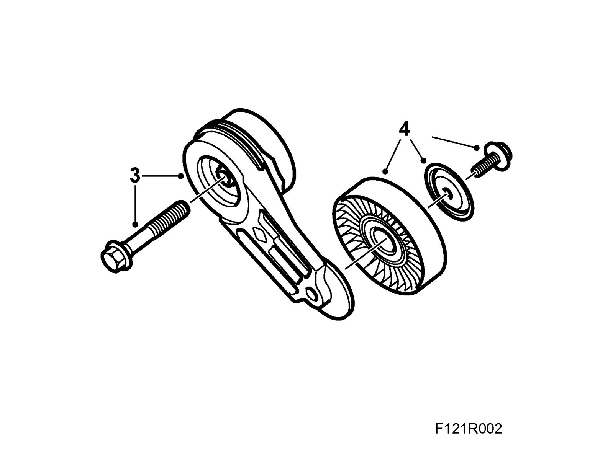
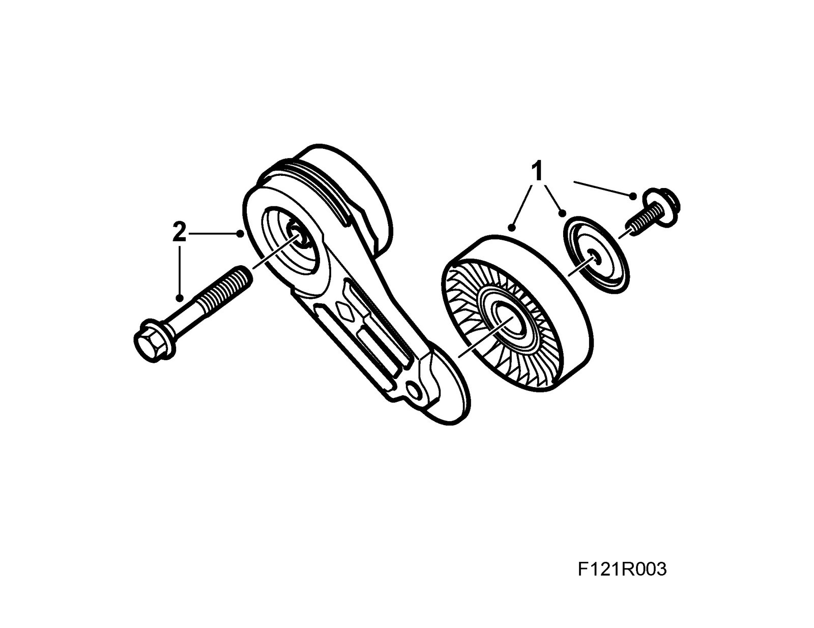
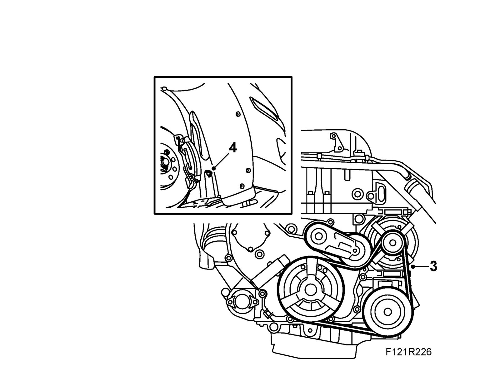

Drive Belt Tensioner: Service and Repair
Belt tensioner with breaker wheelTo remove
1. Raise the car, twist the wheel out and release the front part of the right wing liner.
2. Relieve the belt tensioner with 83 96 095 Relieving tool, belt circuit and remove the belt. Mark the direction of rotation on the belt.
3. Remove the belt tensioner.

4. Remove the breaker wheel.
To fit
1. Fit the breaker wheel to the belt tensioner.
Tightening torque 25 Nm (18 lbf ft)

2. Fit the belt tensioner.
Tightening torque 50 Nm (37 lbf ft)
3. Relieve the belt tensioner with83 96 095 Relieving tool, belt circuit and fit the belt in the marked direction of rotation.

4. Mount the front part of the wing liner and lower the car